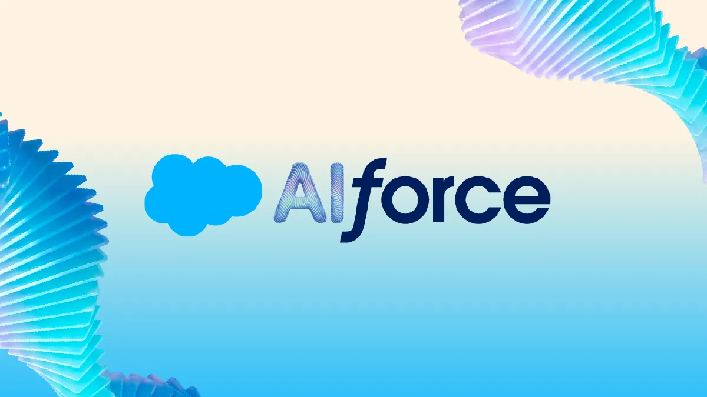
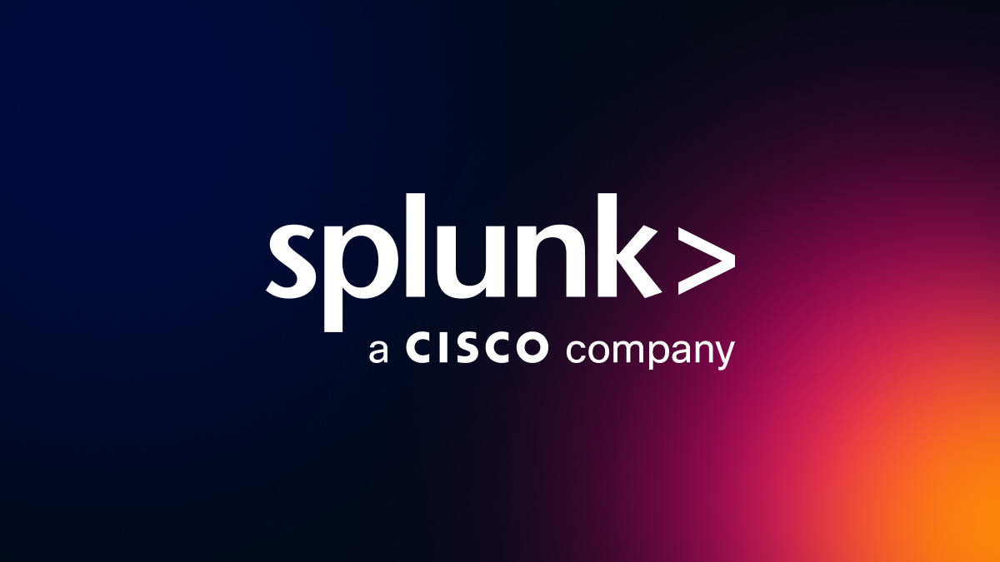
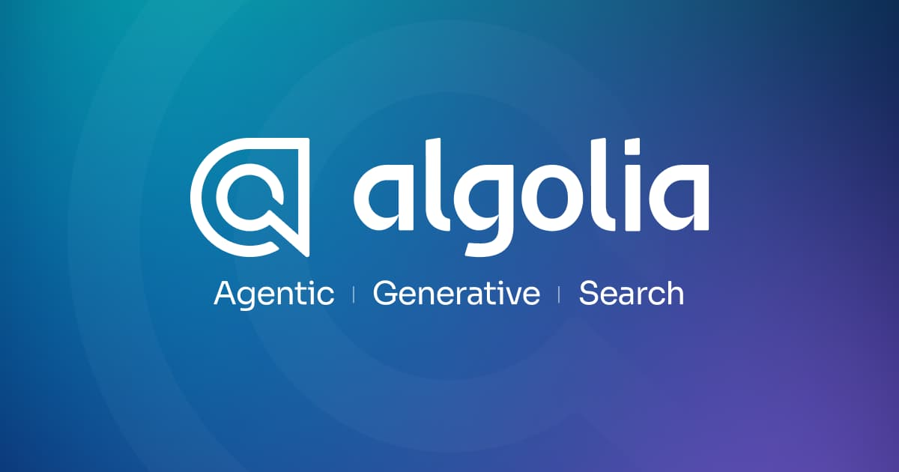
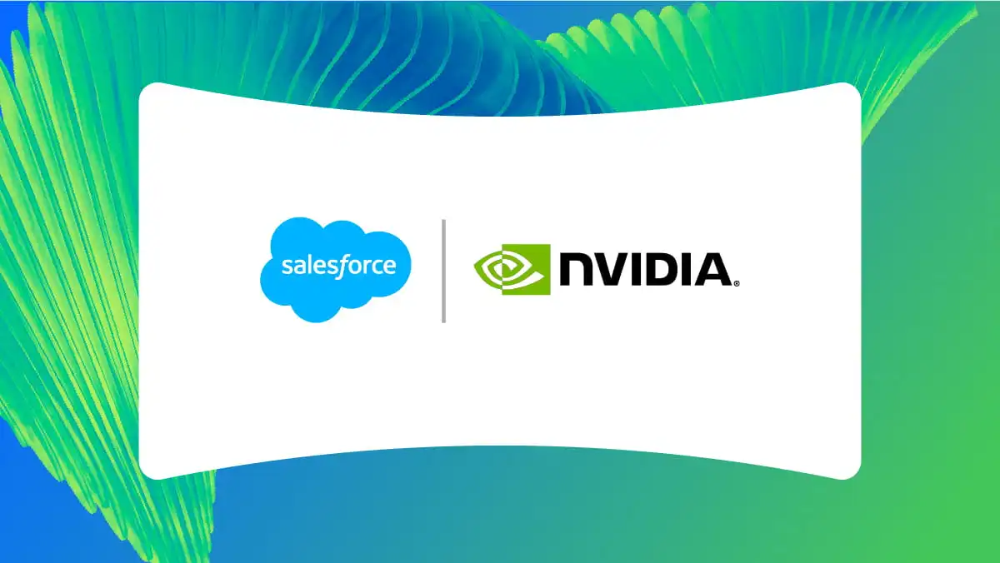
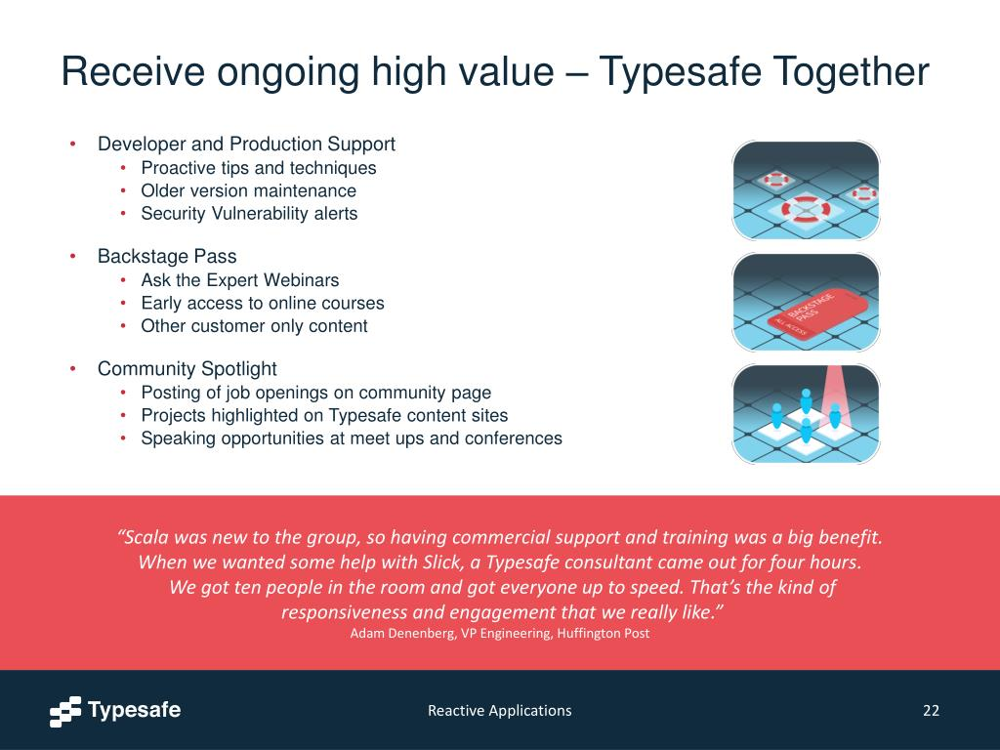
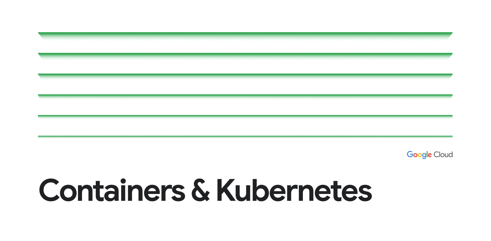
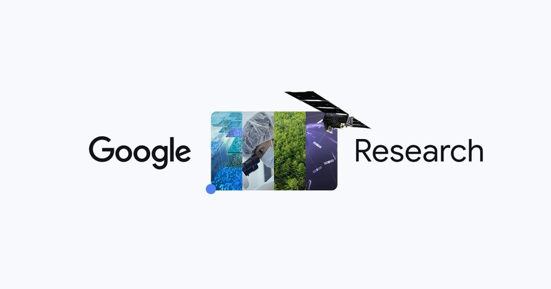
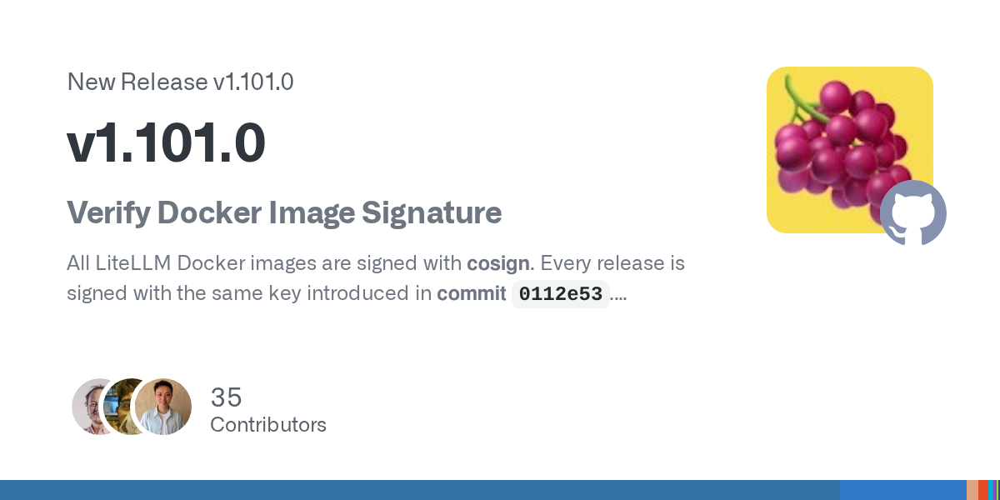

2026-09-16
VOL 351
读者，早。
入口退场不等于责任消失。Cloudflare 让网站单独拒绝训练用途，Cisco 与 Splunk 开始逐项计算 Coding Agent 的 token 和动作风险，Google 为大量 sandbox 解决暂停、恢复与隔离，AIUC 又把 Agent 测试、认证和风险承保做成融资故事。下一轮软件竞争不会只问谁的对话更自然，还会问谁能接住真实工作、留下证据，并把结果交还给人继续修改。

Salesforce 9 月 15 日发布 AIforce，以 Headless Toolkit 将 CRM 内的数据、workflow、business logic、semantics、权限与治理开放给 Claude、Slack、Lightning 等界面。首批组合包括 Claudeforce、Slackforce 与 Agentforce Coworker；Salesforce in Claude 含 37 个销售 skills，目前面向全部客户 beta，后续产品、价格与区域仍未完全公布。

Cloudflare 9 月 15 日上线 Disallow AI Training，让网站在继续接受搜索引擎索引时，向兼具搜索与训练用途的 mixed-use crawler 明确拒绝训练。公司表示 Apple、Google、Microsoft 已遵守或承诺遵守该信号，原有 Block AI Bots 设置将逐步退场；这仍是 crawler policy，不是无法绕过的技术锁，也不是内容补偿机制。

Cisco 与 Splunk 9 月 15 日公布 Agent Observability 与 Tokenomics。后者按用户、团队和 Coding Agent 归因 token 消耗并预测账期支出，前者加入 runtime guardrails，可拦截不准确输出、危险动作与敏感数据泄露；Cisco AI POD for Splunk 还面向本地、私有云和 air-gapped 环境。产品效果与节省幅度仍需客户现场验证。
Autodesk 9 月 15 日预告下一代 Assistant 将横跨 Forma、Fusion、Flow 三个 industry cloud，以项目数据、几何、约束、物理、历史与生产流程为上下文，并包含 Personal Pulse、Assistant Spaces、Assistant Builder 和可按准确度、速度、安全、成本选模型的 AI Orchestrator。新增跨产品体验计划 2027 年才开始推出，不是当日 GA。

Algolia 9 月 15 日发布面向 agentic commerce 的 MCP Server 与 Agent Studio，将商品搜索、facet、catalog context、实时价格、库存、相关性和 merchandising rule 暴露给 ChatGPT、Claude、Gemini 及自建 Agent。控制台提供 SDK、生成式实现代码、输入输出 guardrail、rate limit、token budget、conversation depth 和 tool limit；具体定价与独立线上指标未披露。

Google 9 月 15 日推出 Gemini 3.8 Live 与 Live Extended Thinking。前者面向低成本实时语音及视觉 grounding，后者在复杂多步骤任务中可继续说话并在后台调用工具；官方资料列出 128K 输入、64K 音频或文本输出、97 种语言自动识别切换，生成音频带 SynthID。官方 benchmark 不能直接等同于中文口音、长对话延迟和地区可用性。

Salesforce 9 月 15 日公布 CRM reasoning model Koa。它基于 NVIDIA Nemotron 3 Super 后训练，使用合成企业 workflow 数据，并在 Salesforce 的 trust boundary 内控制权重与推理；目前仅 select pilot，美国 GA 计划在 2026 年冬季。公司所称错误减少三倍属于自有 benchmark，尚不能外推到所有 CRM 任务。

Gensyn 9 月 15 日发布 1.61B 参数的 open-1b-base，同时公开训练数据、代码、每 100 步 checkpoint、逐步状态 hash、验证记录与 audit harness。模型训练使用 400B token 加 93B mid-training token，在 48 张 H100 上运行 80,957 步；团队同时披露约 5% MFU，明显慢于优化后的 PyTorch。所谓行业首个仍是公司口径。

TypeSafe AI 9 月 15 日宣布完成 4,000 万美元 seed 融资并推出 early access 产品 Jev。它不逐 token 生成文字，而是返回有类型的选项和校准概率，面向分类、routing、审批与软件决策流程。速度、成本与准确度主张来自公司材料，服务尚未全面开放，因此更适合作为结构化决策路线观察，而非现成创作模型。

Google Cloud 9 月 15 日开源 Agent Substrate，一套 secure-by-default 的 Agent runtime，可用 Cloud Hypervisor microVM 或 gVisor 隔离。官方称 sandbox 恢复低于 500ms、每秒可处理 500 次以上 suspend 或 resume、密度达标准 container runtime 的 10 倍，单 host 可容纳 1,000 个以上 dormant agents。当前所有 GKE 客户仅可用于 non-production，生产 GA 仍需 allowlist，性能数据均为 Google 自测。

IBM Research 团队 9 月 15 日发布 Consistency Analyzer 与 ALTK Evolve 方法：重采样同一 Agent 的已记录 trajectory，找出容易反复翻转的决策步骤，再生成针对性 guidelines。论文在 AppWorld 的特定配置中，GPT-4.1 ReAct agent 五次全部成功的任务比例由 53.0% 升到 69.0%；该结果只适用于所测环境，不能泛化为所有 Agent。

Google Research 9 月 15 日介绍 Retrieve-for-Train：用一次性离线 reinforcement learning 生成监督信号，再将复杂 fan-out 搜索行为编进一个 5,390 万参数的 diffusion retriever，减少每次线上查询都运行自回归推理的成本。官方报告相对 autoregressive fan-out 加速 12 至 20 倍，但实验集中在时尚搭配和音乐播放列表，不能外推为所有 RAG 与搜索系统。

LiteLLM 9 月 15 日发布 v1.101.0，所有 Docker image 开始使用 cosign 签名，官方建议从固定 commit 获取公钥，而不是只信任可移动的 release tag。同版还加入 OpenAI workload identity federation、Responses input-token 计数，并修复路由与 guardrail 问题。镜像签名只能证明制品来源，仍不能替代漏洞扫描和运行权限收紧。
讯兔科技旗下 AlphaPai 9 月 15 日完成 5,000 万美元 B 轮，是过去一年第三轮融资。投资方包括中保投资、广发信德、启明创投、琥珀资本、嘉程资本、信宸资本与钟鼎资本；公司称服务 12 万名专业用户、覆盖 8,000 多家金融及资管机构，资金将投入模型、产品、多资产客户拓展和海外布局，用户与机构数均为公司披露。
AIUC 9 月 15 日完成 4,000 万美元 Series A，由 Ribbit Capital 领投、First Harmonic 参投，累计融资 5,500 万美元。其 AIUC-1 以约 5,000 个风险与攻击组合测试 jailbreak、hallucination、数据泄漏等问题，Agent 每季度重新认证；Cursor、ElevenLabs、Harvey、UiPath 与 Fin 被列为采用者。认证覆盖与效果主要来自公司材料。
欧洲 AI 基础设施公司 EUCLYD 9 月 15 日宣布完成超过 2 亿欧元 Series A，投资方包括 Samsung、Scaleup Europe Fund 与 EQT 等，前 ASML CEO Peter Wennink 出任董事长。公司目标是降低大规模 inference 的能耗与成本，但具体产品性能、客户部署和商业收入仍缺少公开独立数据，现阶段应视为高额基础设施押注。
Fotor 9 月 15 日发布 Fotor Agent，可从 brief 或原始素材生成脚本、分镜、素材、配音、音乐、字幕与 motion graphics，并自动装入多轨时间线；文本、颜色、图表、图层、动画节奏和位置仍可继续编辑，官方称支持 4K motion graphics 与长视频。公司宣称的速度和成本优势来自内部 benchmark，公开价格、授权边界和复杂项目兼容性尚未披露。